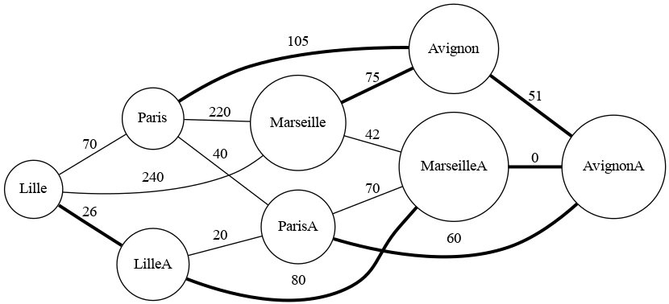

Projets
Voici la liste des projets sur lesquels j'ai travaillé.
Algorithme de classification de données
· 2024Projet de création d’algorithme visant à classer, selon certaines caractéristiques, des données à l’aide d’un jeu de données.

Recherche du plus court itinéraire
· 2024Projet visant à trouver le chemin le plus court parmi un graphe de routes, ainsi qu’un jeu de données. Ce jeu de données contient les valeurs des routes.
Quizemon
· 2023Jeu de duel au tour par tour sur des sujets scholaires.

Installation d'une Machine Virtuelle
· 2023Projet visant à aider à l’installation d’une machine virtuelle sur un environnement Linux.